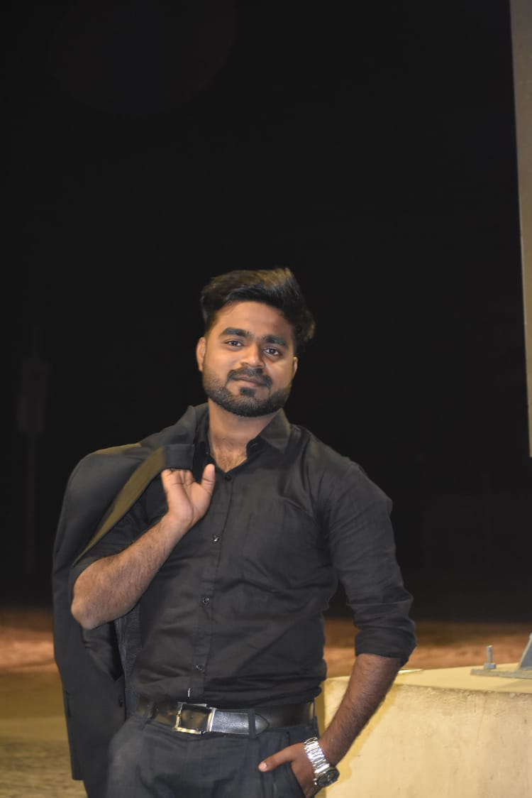

Ayan khan

Summary
"As a passionate and results-driven student developer, I
have honed my skills in software development through a
combination of coursework, personal projects, and
internships. With a solid foundation in programming
languages like C, C++, and Java, I have contributed to
various software projects, demonstrating my ability to
analyze complex problems, design innovative solutions, and
write efficient code.
As a continuous learner, I stay up-to-date with the latest
industry trends and technologies, eager to apply my
knowledge to real-world challenges. I am excited to further
my career in software development, leveraging my
academic background and practical experience to create
meaningful solutions and drive innovation.
Education
- Secondary School - Children's Academy (2018-2020)
- Bachelor of Technology - Galgotias University (2022-Present)
Work experience
Fresher
Web Developer
- Actively engaged in coursework related to computer science, including data structures, algorithms, and programming
languages such as C++, Java, html, css or others.
-
Developed practical skills in coding, debugging, and testing through academic assignments.
-
Explored self-directed coding projects, applying programming knowledge to real-world challenges.
-
Acquired essential soft skills, including time management, teamwork, and effective communication.
Skills
-
C : ***
-
C++ : ****
-
Java : ***
-
HTML : ****
-
CSS : ***
-
Javascript : **
Awards and Certifications
-
Captain of School Sports team - Children's Academy (2020)
Others
© Ayan Khan. All Rights Reserved.